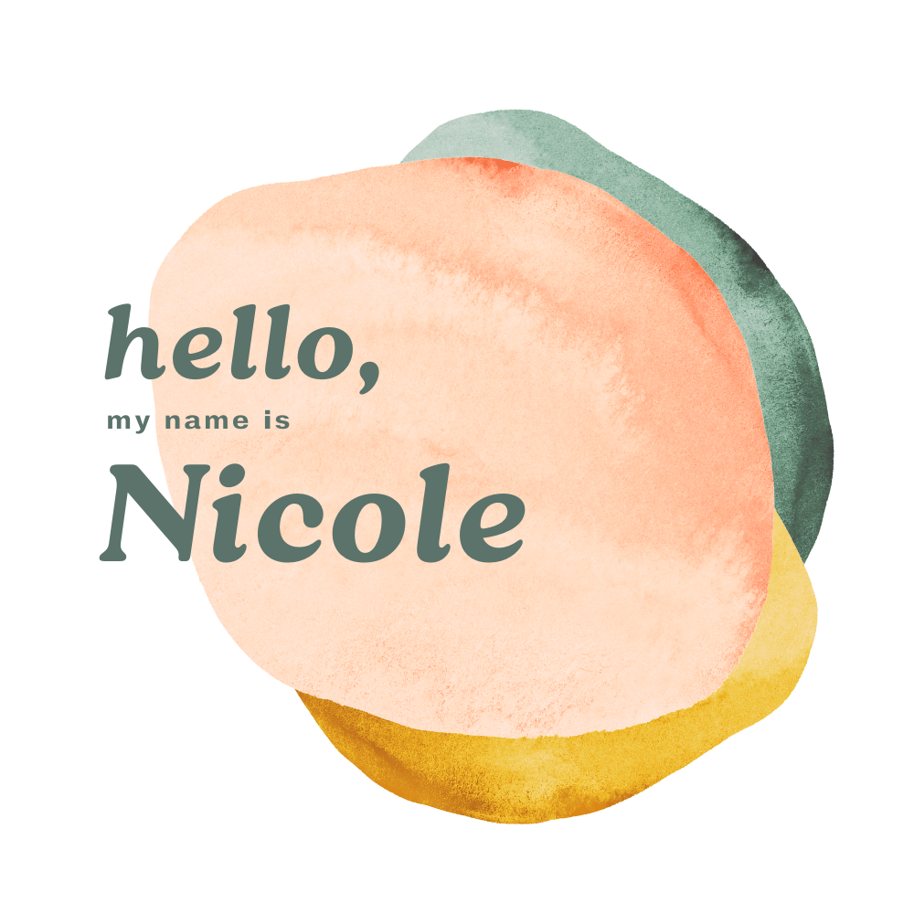
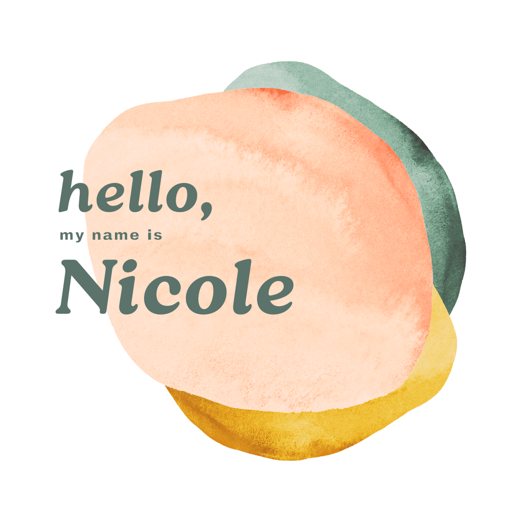

Built using: HTML and CSS
In this project, I refined a basic HTML and CSS landing page for a marketing agency, enhancing its structure and performance. By implementing semantic HTML tags, I improved the website's organization and SEO friendliness. I optimized the CSS, streamlining the code for efficiency. Additionally, the inclusion of alt tags boosted the website's accessibility.
Built using: HTML/CSS and JavaScript
Users can effortlessly chat with friends, share photos, and stay connected. Additionally, it allows for the convenient saving of contacts, making it an all-in-one communication solution. The app also includes customizable settings to personalize the user experience, enhancing interaction and engagement within the network.
Built using: HTML/CSS and JavaScript
The app provides a user-friendly platform designed for babysitters and parents. Babysitters can manage and accept booking requests for childcare services. Parents benefit from a booking system that clearly displays a babysitter's availability, certifications, skills, and experience. The app also includes babysitter profiles, enabling parents to confidently select and book childcare.
As a fresh face in the world of full stack web development with a love for UX/UI design, I'm embarking on a journey filled with learning and growth. My passion lies in tackling new challenges and rapidly adapting to new technologies. I'm a true team player, enjoying opportunities to collaborate, exchange ideas, and contribute to a shared vision.
What drives me in web development is the thrill of problem-solving and the joy of turning concepts into reality. Away from the keyboard, I find joy in camping trips and outdoor adventures with my family, experiences that refresh and inspire me. My approach to both life and work is grounded in positivity, a willingness to learn, and a commitment to making every day count.